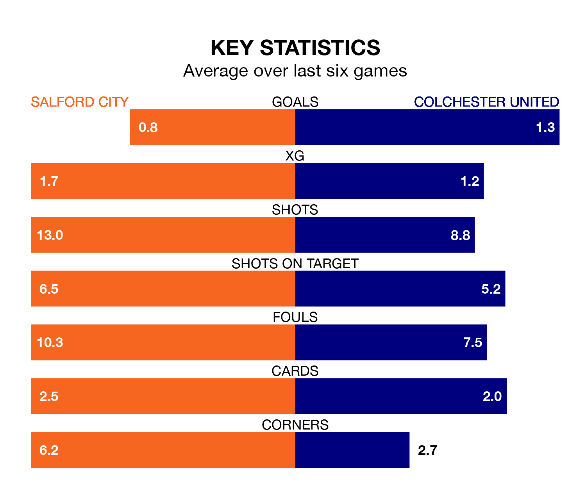

Struggling Salford City face Colchester United at the Peninsula Stadium on Friday looking to build on a win in their last league outing.
After securing all three points with a 1-0 victory over Crawley Town on January 13, the Ammies sit 21st in EFL League Two.
They travel to play a Colchester side 22nd in the standings, who were held in their last match, 1-1 against Bradford City.
In the last 10 years, Salford and Colchester have played each other on nine occasions. Salford won one of them, Colchester six, and they drew twice.
On average, the Ammies scored 0.6 goals and the U's 1.2 in those matches.
Their last meeting was on December 22, when Colchester won 2-1 at home.
In Matt Smith, Salford have one of the league's most on-form strikers so far this season. He has notched 15 goals in 27 appearances, to sit third in the scoring charts.
His goal rate of one every 144 minutes is quicker than that of Joseph Taylor, Colchester's top scorer with a goal every 178 minutes, and a total of 11 goals in 25 games.
City are in bad form in EFL League Two, with one win and a draw from their last six games.
With a win and two draws over that period, United's form is slightly better – they have taken five points from 18, compared to the Ammies' four.
With 35 goals in 27 games so far this season, the hosts are scoring at below the league average rate with 1.3 goals per game. And they are conceding more than average, letting in 48 goals at a rate of 1.8 per game.
The U's are also below average scorers, with 1.4 goals per game, compared to a league average of 1.5. They have conceded 2.0 goals per game.
Updated: 06:13 (UTC), 18/01/24